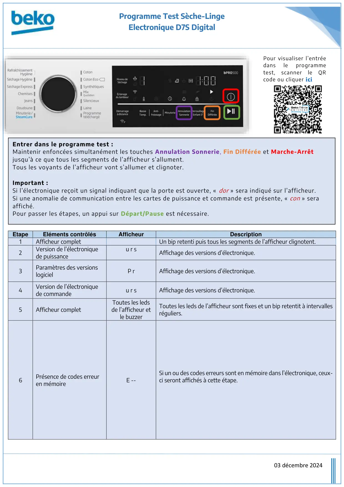
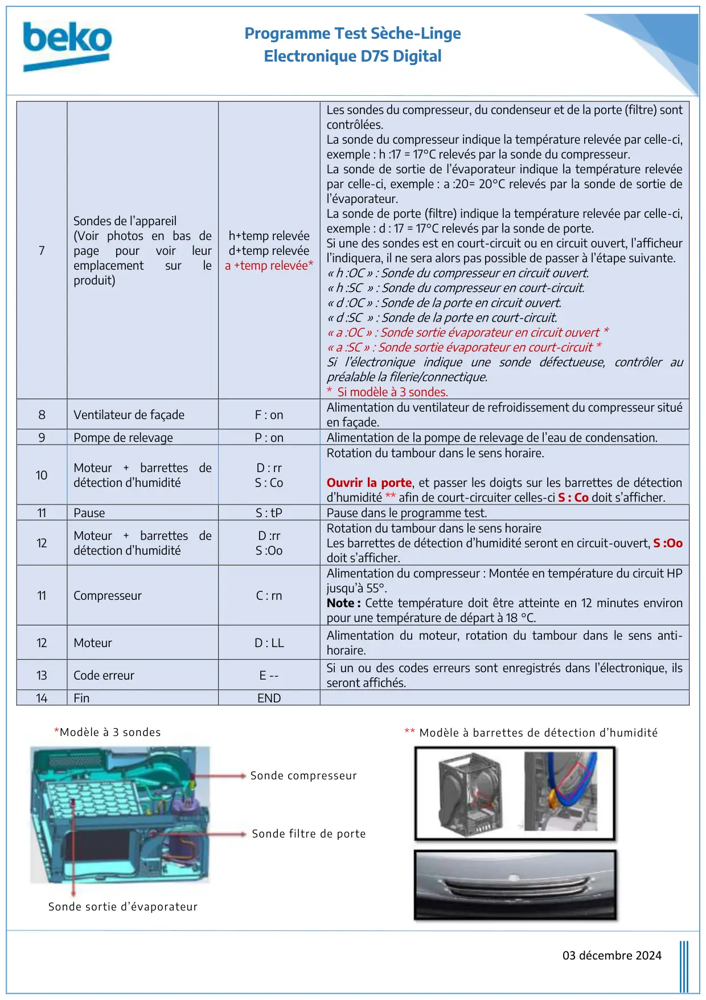
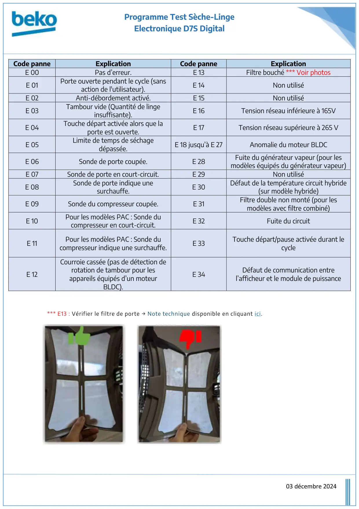

Prog Test seche linge D7S Digital Display

Programme Test Sèche-LingeElectronique D7S Digital03 décembre 2024EtapeEléments contrôlésAfficheurDescription1Afficheur completUn bip retenti puis tous les segments de l’afficheur clignotent.2Version de l’électroniquede puissanceu r sAffichage des versions d’électronique.3Paramètres des versionslogicielP rAffichage des versions d’électronique.4Version de l’électroniquede commandeu r sAffichage des versions d’électronique.5Afficheur completToutes les ledsde l’afficheur etle buzzerToutes les leds de l’afficheur sont fixes et un bip retentit à intervallesréguliers.6Présence de codes erreuren mémoireE --Si un ou des codes erreurs sont en mémoire dans l’électronique, ceux-ci seront affichés à cette étape.Entrer dans le programme test :Maintenir enfoncées simultanément les touches Annulation Sonnerie, Fin Différée et Marche-Arrêtjusqu’à ce que tous les segments de l’afficheur s’allument.Tous les voyants de l’afficheur vont s’allumer et clignoter.Important :Si l’électronique reçoit un signal indiquant que la porte est ouverte, « dor » sera indiqué sur l’afficheur.Si une anomalie de communication entre les cartes de puissance et commande est présente, « con » seraaffiché.Pour passer les étapes, un appui sur Départ/Pause est nécessaire.Pour visualiser l’entréedansleprogrammetest,scannerleQRcode ou cliquer ici
1 / 3
Programme Test Sèche-LingeElectronique D7S Digital03 décembre 20247Sondes de l’appareil(Voir photos en bas depagepourvoirleuremplacementsurleproduit)h+temp relevéed+temp relevéea +temp relevée*Les sondes du compresseur, du condenseur et de la porte (filtre) sontcontrôlées.La sonde du compresseur indique la température relevée par celle-ci,exemple : h :17 = 17°C relevés par la sonde du compresseur.La sonde de sortie de l’évaporateur indique la température relevéepar celle-ci, exemple : a :20= 20°C relevés par la sonde de sortie del’évaporateur.La sonde de porte (filtre) indique la température relevée par celle-ci,exemple : d : 17 = 17°C relevés par la sonde de porte.Si une des sondes est en court-circuit ou en circuit ouvert, l’afficheurl’indiquera, il ne sera alors pas possible de passer à l’étape suivante.« h :OC » : Sonde du compresseur en circuit ouvert.« h :SC » : Sonde du compresseur en court-circuit.« d :OC » : Sonde de la porte en circuit ouvert.« d :SC » : Sonde de la porte en court-circuit.« a :OC » : Sonde sortie évaporateur en circuit ouvert *« a :SC » : Sonde sortie évaporateur en court-circuit *Si l’électronique indique une sonde défectueuse, contrôler aupréalable la filerie/connectique.* Si modèle à 3 sondes.8Ventilateur de façadeF : onAlimentation du ventilateur de refroidissement du compresseur situéen façade.9Pompe de relevageP : onAlimentation de la pompe de relevage de l’eau de condensation.10Moteur + barrettes dedétection d’humiditéD : rrS : CoRotation du tambour dans le sens horaire.Ouvrir la porte, et passer les doigts sur les barrettes de détectiond’humidité ** afin de court-circuiter celles-ci S : Co doit s’afficher.11PauseS : tPPause dans le programme test.12Moteur + barrettes dedétection d’humiditéD :rrS :OoRotation du tambour dans le sens horaireLes barrettes de détection d’humidité seront en circuit-ouvert, S :Oodoit s’afficher.11CompresseurC : rnAlimentation du compresseur : Montée en température du circuit HPjusqu’à 55°.Note : Cette température doit être atteinte en 12 minutes environpour une température de départ à 18 °C.12MoteurD : LLAlimentation du moteur, rotation du tambour dans le sens anti-horaire.13Code erreurE --Si un ou des codes erreurs sont enregistrés dans l’électronique, ilsseront affichés.14FinENDSonde compresseurSonde filtre de porteSonde sortie d’évaporateur*Modèle à 3 sondes** Modèle à barrettes de détection d’humidité
2 / 3
Programme Test Sèche-LingeElectronique D7S Digital03 décembre 2024Code panneExplicationCode panneExplicationE 00Pas d’erreur.E 13Filtre bouché *** Voir photosE 01Porte ouverte pendant le cycle (sansaction de l'utilisateur).E 14Non utiliséE 02Anti-débordement activé.E 15Non utiliséE 03Tambour vide (Quantité de lingeinsuffisante).E 16Tension réseau inférieure à 165VE 04Touche départ activée alors que laporte est ouverte.E 17Tension réseau supérieure à 265 VE 05Limite de temps de séchagedépassée.E 18 jusqu’à E 27Anomalie du moteur BLDCE 06Sonde de porte coupée.E 28Fuite du générateur vapeur (pour lesmodèles équipés du générateur vapeur)E 07Sonde de porte en court-circuit.E 29Non utiliséE 08Sonde de porte indique unesurchauffe.E 30Défaut de la température circuit hybride(sur modèle hybride)E 09Sonde du compresseur coupée.E 31Filtre double non monté (pour lesmodèles avec filtre combiné)E 10Pour les modèles PAC : Sonde ducompresseur en court-circuit.E 32Fuite du circuitE 11Pour les modèles PAC : Sonde ducompresseur indique une surchauffe.E 33Touche départ/pause activée durant lecycleE 12Courroie cassée (pas de détection derotation de tambour pour lesappareils équipés d’un moteurBLDC).E 34Défaut de communication entrel’afficheur et le module de puissance*** E13 : Vérifier le filtre de porte → Note technique disponible en cliquant ici.
3 / 3